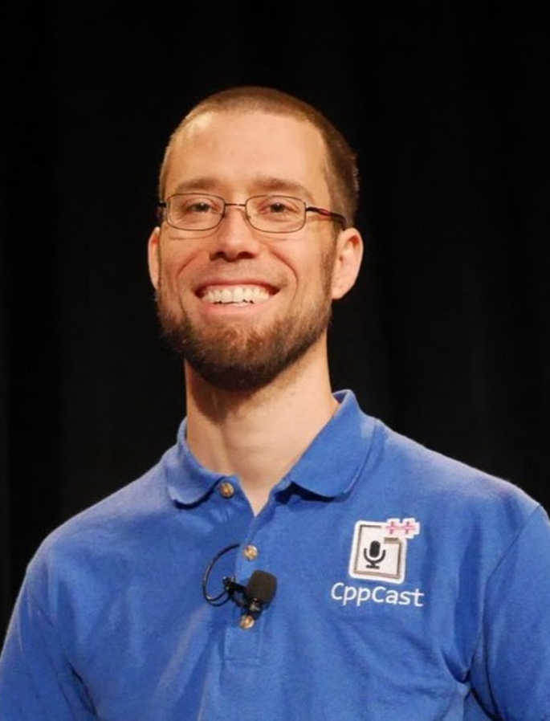
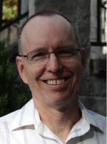
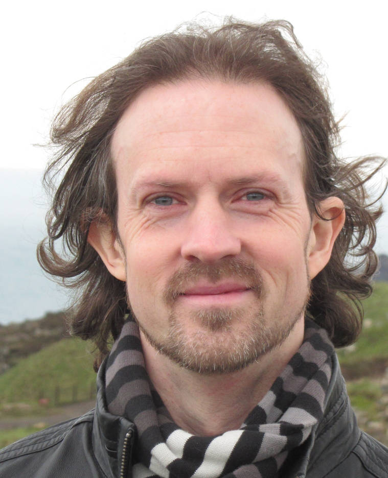

C++ World Café
At the C++ UG Karlsruhe on June 14th 2017
TL;DR
The C++ World Café discussion format helps to get a broad and current overview of some C++ topics, to get to know peer developers, and is a lot of fun. Our C++ World Café got support from four C++ gurus from around the world: Anthony Williams, Jason Turner, Robert Ramey, and Walter Bright.
We investigated the following 4 questions:

How can I become a better C++ developer?
Skype session: Jason Turner
Table Host: Robert Schneider
Which libraries/frameworks are most helpful for me, and why?
Skype session: Robert Ramey
Table Host: Ralf Mikulla

How does the compiler help/hinder me?
Skype session: Walter Bright
Table Host: Andreas Zwinkau

Which features and advantages does C++ offer for parallelization?
Skype session: Anthony Williams
Table Host: Timo Bingmann
Introduction
The C++ user group Karlsruhe organized a World Café at one of its last meetups, to have everyone in the group involved in discussions, and to get a broad overview of some C++ topics. In our World Café format, small groups of 4-6 people sit together at each table to discuss about a given question for 30 minutes, noting down their findings. This constitutes a round, with 4 rounds in total. All but each table's host switch tables each round, and the table host introduces the topic and previous findings to the new-comers. Each table discusses a different question.
To have a satisfying event and help the table hosts, we set the following goals for our C++ Word Café:
- gather information about the topic, so that we learn, as well as collect what topics our C++ user group is interested in
- motivate discussions and getting to know each other
- have fun.
To make sure the goals are reached, we got support from the C++ gurus Anthony, Jason, Robert, and Walter (our "ask the expert" lifelines, so to speak): at the last round, each table started a Skype session with one of those gurus. They gave us feedback and answers to open questions, motivated everybody to engage in the discussion, and made the whole event really fun. To give you an impression, here are our results:
How can I become a better C++ developer?
In the first three rounds, we brainstormed about
- what a good software developer in general and a good C++ developer is, including their character traits, tasks within a team, and abstraction capabilities
- what actions to take to become better, including practicing in projects and using the C++ standard library(-conventions)
- where to get information to improve, covering books, mentors and learning from problems.
In the fourth and last round, Jason Turner joined in via Skype, and
- answered a lot of open questions we had;
- brainstormed with us about technical aspects like rolling your own array_view, effects of boost::spirit or std::unordered_map or constexpr on compile times, and recursion in a lambda without using std::function;
- made the event feel like a party :)
Further material:
Which libraries/frameworks are most helpful for me, and why?
In the first three rounds, different libraries and their use was discussed. The focus, however, was on problems when using libraries, covering the following four points:
- triangle between learning, enabling, and efficiency;
- documentation;
- managing dependencies;
- managing patches.
In the fourth and last round, Robert Ramey joined in via Skype, commented on the four points above and then went into detail about economics, responsibilities and testing:
- Getting a library right entails a lot more effort then first meets the eye. Hence many redo something already present, even though it is not economic.
- Weak documentation is a running festering sore in the whole software development community. Robert covers this in many of his presentations at CppCon.
- People have had unrealistic expectations about automatic dependency managers; you have to make the dependency related to your particular application.
Furthermore:
- Content creators should be compensated for their work, but that is a pipe dream right now.
- If you use an open source library in your project, you are still responsible for your project to work, and thus for the library to work in your context.
- Run the boost test suite that comes with a boost library to certify the library on your platform. Unfortunately, running the tests is a pain in the neck. It should be totally idiot proof, so the library developer can demand the users to run the tests on their platform.
Further material:
Which features and advantages does C++ offer for parallelization?
In all the first three rounds, as well as the last round together with Anthony Williams, we
- gathered a great big picture: parallelization is a broad field, complex, but necessary;
- saw that C++ is very well suited for parallelization: it enables a lot of powerful solutions since you can go down to the bare metal. No matter what you wish for, C++ offers a suitable library or at least TS or proposal.
- covered many features and facets: Boost.Asio and strands, concurrency TS, coroutines, executor, HPX, memory model, MPI, OpenMP, parallel STL, pipelines, SIMD, std::atomics, std::lock_guard, synchronization, thread pools, TSan.
In the fourth and last round, Anthony Williams joined in via skype, and
- showed us aspects and features about parallel programming in C++ that we had missed;
- granted us all our wishes;
- helped us get an overview of many TSs and proposals covering parallelization in C++.
Further material:
How does the compiler help/hinder me?
In the first three rounds, the discussions covered warnings and error messages, meta programming, linking, assertions, code analysis, optimizations, undefined behavior, and buggy compilers.
In the fourth and last round, Walter Bright joined in via skype, gave feedback to many previous discussed items and answered some new questions that came up, covering
- code analysis with sanitizers, PVS Studio, Coverity, and using D instead of C++;
- considering assembler code for performance, to avoid timing attacks, why some resist looking at it, and possible tooling;
- using different compilers for finding more bugs, increasing portability, and because each has its own style;
- the tradeoff between the diagnostic information of assertions and their runtime;
- integrating linking into the compiler for better diagnostics and faster build times;
- how compilers can improve their error messages, e.g. using spell checking, colorizing, and printing out the offending line;
- the language D, which has the best C++ interoperability among the modern languages, builds faster and causes fewer bugs.
Further material:
Conclusion
Though a bit of work to prepare, our C++ World Café was a big success since we achieved all goals: We covered a vast amount of aspects for each question and had really fun discussions. A big thanks to Anthony, Jason, Robert, and Walter for their support, to Andreas, Ralf, Robert, and Timo for their moderation, and to Clausmark GmbH for their sponsoring. Also a big pardon for the technical difficulties we had, and thanks to Mark Edwards for post-processing the audio to improve the quality as much as possible.
Which leads to our experience with and advice for the C++ World Café format: To achieve the aforementioned goals, do one in your user group or even at a conference, since it scales well with the number of participants! The general advice for World Cafés are quite accurate and helpful. They do focus preparation too much on finding good questions, I think, because that is rather easy for a C++ World Café. Further questions could be:
- What are the strengths and weaknesses of C++?
- How should the C++ landscape evolve?
- Which tools help me most in my C++ development, and how?
- Why is functional programming becoming more and more important in C++? (see http://www.grimm-jaud.de/index.php/blog/and-the-winners-are)
- What are the strengths and weaknesses of C++ template meta programming?
- How can I avoid/find/fix/learn from bugs?
The preparation of the tables was also simpler than you would expect from the World Café advice; just throw a paper table cloth (available cheaply in larger food or drug stores) over your tables to write on, and put some cookies on top.
Rather put your energy into the preparation for the moderation and equipment: find your table hosts early on, not spontaneously at the meeting, since you need to find people who know about the respective topic, and to brief them about the C++ World Café format. If you include Skype sessions, you have all the challenges that audio and video recordings entail, multiplied by the number of tables: Each table must have Skype online and running. Running in a quiet environment, that is! While it is simple for a human ear to tune out the noise from the neighbor table, this is no longer possible once sound has been recorded through a laptop microphone, as you can unfortunately hear in some of our recordings. Sorry Jason and Robert, and thanks for handling it so well. My rule of thumb: at the very least, have 10 meters distance between each two tables. If you are recording the Skype sessions, experiment with the Sykpe or screen/audio recording tool well in advance, especially with how to avoid echos due to acoustic feedback loops.
But with this advice, you only have to put in some preparation and get all the benefits described above. So, conduct a C++ World Café, and then let others know about your results!
 Copyright © 2017 Dr. David Faragó. This work, except for the pictures, is licensed under the Creative Commons Attribution 4.0 International License (CC BY 4.0).
Copyright © 2017 Dr. David Faragó. This work, except for the pictures, is licensed under the Creative Commons Attribution 4.0 International License (CC BY 4.0).
{kind=link}